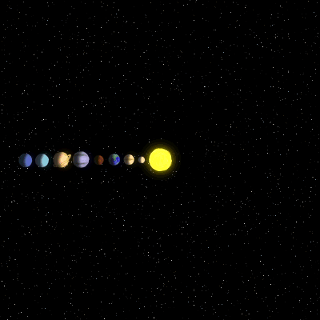

The Universe
El universo es la totalidad del espacio y del tiempo,
de todas las formas de la materia, la energia, el impulso,
las leyes y constantes fisicas que las gobiernan. Sin embargo,
el termino tambien se utiliza en sentidos contextuales ligeramente
diferentes y alude a conceptos como cosmos, mundo o naturaleza.
un planeta es un astro que no emite luz propia como las estrellas y tiene masa
para que su gravedad supere las fuerzas del cuerpo rigido, de manera que asuma
en equilibrio orbital e hidrostatico una forma como practicamente esferica.